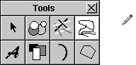

Release 3.3 Copyright ©1995 by NeXT Computer, Inc. All Rights Reserved.
| 2 |
Design Philosophy
| A user interface must meet the needs of both novice and experienced users: |
| For the novice or infrequent user, it must be simple and easy both to learn and to remember. It shouldn't require any relearning after an extended absence from the computer. | ||
| For the more experienced user, it must be fast and efficient. Nothing in the user interface should get in the way or divert the user's attention from the task at hand. |
| The challenge is to accommodate both these goals in ways that don't conflict--to combine simplicity with efficiency.
A graphical (window-based) user interface is well suited to this task. Because graphical objects can be endowed with recognizable features of real objects, users can borrow on their everyday experience when they approach the computer. Graphical buttons work like you'd expect real buttons to work, windows behave much like separate tablets or sheets of paper, sliders and other graphical objects act like their physical counterparts off-screen. The computer becomes less an entirely new world with its own rules, and more an extension of the more familiar world away from the computer screen. This not only makes the user interface easier to learn and remember, it also permits operations to be simpler and more straightforward. Picking an option is as easy as flicking a switch. Resizing a window is as direct and simple as pulling on a tab. The same attributes of the user interface that provide simplicity for novice users can also result in efficiency for more expert users. |
| Basic Principles |
| The NEXTSTEP user interface is designed with certain basic principles in mind. Four are especially important: |
| The interface should be consistent across all applications. | ||
| The user is in charge of the workspace and its windows. | ||
| The interface should feel natural to the user. | ||
| The mouse (not the keyboard) is the primary instrument for user input. |
| Each of these principles is discussed in more detail in the sections that follow.
Consistency When all applications have the same basic user interface, every application benefits. Consistency makes each application easier to learn, thus increasing the likelihood of its acceptance and use. Just as drivers become accustomed to a set of conventions on public highways, so users tend to learn and rely on a set of conventions for their interaction with a computer. Although different applications are designed to accomplish different tasks, they all share, to one degree or another, a set of common operations--selecting, editing, scrolling, setting options, making choices from a menu, managing windows, and so on. Reliable conventions are possible only when these operations are the same for all applications. The conventions permit users (like drivers) to develop a set of habits, and to act almost instinctively in familiar situations. Instead of being faced with special rules for each application (which would be like each town defining its own rules of the road), users can carry knowledge of how one application works on to the next application.
User Control The workspace and the tools for working in it (the keyboard and mouse) belong to the user, not to any one application. Users should always be free to choose which application and which window they will work in, and to rearrange windows in the workspace to suit their own tastes and needs. When working in an application, the user should be afforded the widest possible freedom of action. It's inappropriate for an application to arbitrarily restrict what the user can do. If an action makes sense, it should be allowed.
Modes In particular, applications should avoid setting up arbitrary modes, periods when only certain actions are permitted. Modes often make programming tasks easier, but they usurp the users' prerogative of deciding what will be done. They can thus feel annoying and unreasonable to users who aren't concerned with implementation details. On occasion, however, modes are a reasonable approach to solving a problem. Because they let the same action have different results in different contexts, they can be used to extend functionality. When permitted, a mode should be freely chosen, provide an easy way out, be visually apparent, and keep the user in control. In the NEXTSTEP user interface, modes are used in only three situations: |
| In the modal tool paradigm, discussed under "Action Paradigms" later in this chapter | ||
| In attention panels, discussed in Chapter 5, "Panels" | ||
| In "spring-loaded" modes that last only while the user holds a key or mouse button down |
| Acting for the User
Even though the user is in control, sometimes it's appropriate for an application to act on the user's behalf without waiting for the user's instructions. For example, if a user will always select an item after bringing up a panel, perhaps the panel should already have an item that's selected. The purpose of acting on behalf of the user is to simplify the task at hand--to make a user action possibly unnecessary. Therefore, the end result of the application's action must be the same as if the user had performed the action. For example, if the panel's display changes whenever the user selects an item, then the display must also change when the application selects an item. Actions made on the user's behalf should be simple and convenient. Otherwise, they can be annoying or confusing, weakening the user's sense of control over the system. If there's any doubt as to whether an application should act on the user's behalf, then it probably shouldn't. It's better for the application to do too little than too much.
Naturalness The great advantage of a graphical user interface is that it can feel natural to the user. The screen becomes a visual metaphor for the real world, and the objects it displays can be manipulated in ways that reflect the ways familiar objects in the real world are manipulated. This is what's meant when a user interface is said to be "intuitive"--it behaves as we expect based on our experience with real objects in the real world. The similarity of graphical to real objects is at a fundamental rather than a superficial level. Graphical objects don't need to resemble physical objects in every detail. But they do need to behave in ways that our experience with real objects would lead us to expect. For example, objects in the real world stay where we put them; they don't disappear and reappear again, unless someone causes them to do so. The user should expect no less from graphical objects. Similarly, although a graphical dial or switch doesn't have to duplicate all the attributes of a real dial or switch, it should be immediately recognizable by the user and should be used for the sorts of operations that real dials and switches are used for. Each application should try to maximize the intuitiveness of its user interface. Its choice of graphical objects should be appropriate to the tasks at hand, and users should feel at home with the operations they're asked to perform. The more natural and intuitive the user interface, the more successful an application can be.
Using the Mouse All aspects of the user interface are represented by graphical objects displayed on-screen, and all graphical objects are operated mainly by the mouse, not the keyboard. The keyboard is principally used for entering text. The mouse is the more appropriate instrument for a graphical interface. Nevertheless, it's often a good idea to provide keyboard alternatives to mouse actions (see "Keyboard Alternatives" in Chapter 3, "User Actions: The Keyboard and Mouse"). They can be efficient shortcuts for experienced users. Keyboard alternatives are always optional, however. Visual representations on the screen never are. A keyboard operation without a corresponding mouse-oriented operation on-screen isn't appropriate. One of the goals of the user interface is to extend to mouse operations the same naturalness and consistency that the keyboard provides for experienced typists. This is possible only if mouse operations follow established paradigms that users can come to rely on. The next section defines the paradigms used in the NEXTSTEP user interface. |
| Action Paradigms |
| Graphical user interfaces such as NEXTSTEP work best when there are well-defined paradigms for using the mouse. The paradigms must be broad enough to encompassactions for the widest possible variety of applications, yet precise and limited enough so that users are always aware of what actions are possible and appropriate.
The NEXTSTEP user interface supports these three paradigms of mouse action: |
| Direct manipulation | ||
| Targeted action | ||
| Modal tool |
| Direct Manipulation
Most objects respond directly to manipulation with the mouse--a button is highlighted when pressed, a window comes forward when clicked, the knob of a slider moves when dragged. Direct manipulation is the most intuitive of the action paradigms and the one best suited for modifying the position and size of graphical objects. Windows, for example, are reordered, resized, and moved only through direct manipulation. By directly manipulating icons that represent documents, applications, mail messages, or other objects stored in the computer's memory, users can manipulate the objects the icons represent. For example, dragging an icon to a new location can change the position of a file in the file system's hierarchy. Even objects that use the targeted-action or modal-tool paradigm must respond to direct manipulation. For example, although buttons and menu commands can't be resized or moved, they nevertheless respond to direct manipulation as a way of giving feedback to the user. The response--mainly highlighting--shows that the user's action has successfully invoked one of the other paradigms.
Targeted Action Controls--buttons, scrollers, and the like--are vehicles for the user to give instructions to an application. By manipulating a control object, the user controls what the application does. Clicking a close button, for example, not only causes the button to become highlighted, it also removes the window from the screen. The button is simply a control device--like a light switch or a steering wheel--that lets the user carry out a certain action. All controls have one thing in common: They act on a target. Some control objects (such as the Quit menu command) act on an entire application. Others (such as the close button in a window's title bar) act on a window. Still others (such as the Cut menu command) act on a subset of a window's contents (such as text) that the user has selected. Sometimes the user must explicitly select the target, and sometimes not. When the user selects the target, it's usually editable graphics or text. However the target can also be another type of object, such as a window (the target of the Close Window menu command) or a file icon (the target of the Workspace Manager Destroy command). When the user needs to explicitly select a target--no matter whether it's a window or a line of text--the user always selects the target before choosing the control. For example, a user might select a range of text in a file, then choose the Cut command from the Edit menu to remove it. Targeted action with explicit selection is the normal paradigm for controlling or operating on objects. It has the advantage that a sequence of different actions can apply to the same target. For example, selected text can be changed first to a different font, then to a different point size, and then perhaps copied to the pasteboard. Another advantage is that a single control can act on a number of different user-selected targets, making it extremely efficient and powerful. The Cut command, for example, can delete text, as well as graphics, icons, and other objects. In situations where direct manipulation is the most natural way to do an operation, it's preferable to targeted action. However, since direct manipulation isn't sufficient for many operations, targeted action is the most commonly used paradigm. For example, although direct manipulation is an easy, natural way to resize a window (by dragging), it normally isn't easy or natural to set the size of text by dragging the letters to a new height.
Modal Tool In the modal-tool paradigm, users can change the meaning of subsequent mouse actions by selecting an appropriate tool, often displayed in a palette with several other tools. Each tool controls a certain set of operations that are enabled only after it's chosen. For example, a graphics editor might provide one tool for drawing circles and ovals, another for rectangles, and still another for simple lines. Depending on which tool is chosen, mouse actions (clicking and dragging) will produce very different visual results. The cursor assumes a different shape for each tool, so that it's apparent which one has been selected, and the tool itself remains highlighted. Each tool sets up a mode--a period of time when the user's actions are interpreted in a special way. A mode limits the user's freedom of action to a subset of all possible actions, and for that reason is usually undesirable. But in the modal tool paradigm, the mode is mitigated by a number of factors: |
| The mode isn't hidden. The altered shape of the cursor and highlighted state of the tool make it apparent which actions are appropriate. | ||
| The mode isn't unexpected. It's the result of a direct user choice, not the by-product of some other action. | ||
| The way out of the mode (usually clicking in another tool) is apparent and easy. It's available to the user at any time. | ||
| The mode mimics the way things are done in the real world. Artists and workers choose an appropriate tool (whether it's a brush, a hammer, a pen, or a telephone) for the particular task at hand, finish the task, and choose the next tool. |
| The modal-tool paradigm is appropriate when a particular type of operation is likely to be repeated for some length of time (for example, drawing lines). It's not appropriate if the user would be put in the position of constantly choosing a new tool before each action.
Below is a typical palette of modal tools, along with the cursor that shows that a mode is in effect. |
|  |
| Extensions |
| Users will come to count on a basic set of familiar operations throughout the user interface. It's each application's responsibility to make the action paradigms it uses apparent to the user--controls should look like controls (like objects that fit into the targeted-action paradigm), palettes of tools should be self-evident, and so on.
An application should also make certain that its paradigms fit the action. It wouldn't be appropriate, for example, to force users to choose a "moving tool" or a control just to move an object. Graphical objects should move, as real objects do, through direct manipulation. Properly used, the paradigms described above can accommodate a wide variety of applications. Yet over time, as programmers develop innovative software, new and unanticipated operations might require extending the user interface. An extension should be a last resort. All possible solutions within the standard user interface described in this chapter should be exhausted first. Added functionality must be carefully weighed against the ill effects of eroding interapplication consistency for the user. Any extension should be clearly different to the user from existing paradigms. If an extension is required, it should be designed to grow naturally out of the standard user interface, and must adhere to the general principles discussed above. |
| Testing User Interfaces |
| The success of an application's interface depends on real users. There's no substitute for having users try out the interface--even before there's any functionality behind it--to see whether it makes sense to them and lets them accomplish what they want. Some books with information on user testing are listed in the "Suggested Reading" section at the end of this book. |